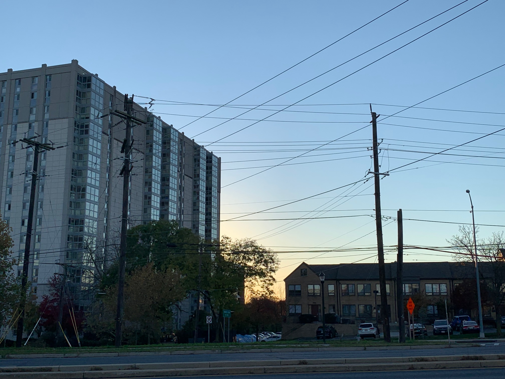

A little about me

The name is Josue Cuevas, i’m a inspiring graphic designer. I do a mixture on landscape pictures and digital illistrations. I’ve worked with photoshop, illustrator, indesign, and i’ve worked with a camera
Stuff i have done


About me
Home